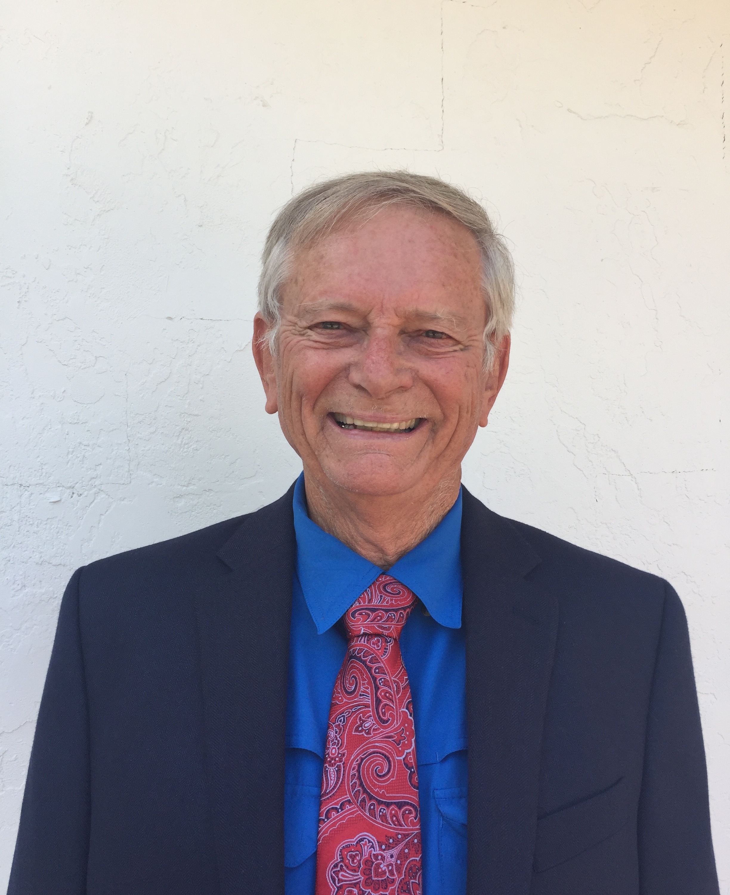

Meet Bernard | Priorities | Donate
Bernard is a retired College President with a Ph.D. from Tulane University and an M.A. from the University of Chicago where he was a Woodrow Wilson Fellow. He is a 35 year resident of Florida and married to Paulette, a Florida native, for 53 years. They have two children and five grandsons all residing in Florida.
Benard is a Guardian ad Litem volunteer and as a GAL he is an independent advocate for the best interests of three children currently assigned to him.
For the past ten years he worked as a volunteer with Habitat for Humanity. In 2002? he joined VISTA (Volunteer in Service to America – the same as Peace Corp but service performed in the US rather than abroad) and spent the next year and a few months working full time with Habitat for Humanity on a special project. At the conclusion of his VISTA service Bernard became involved with Habitat's Global Village program as a senior team leader. Over the next ten years he led teams of 10 to 12 volunteers to construct homes in 20 different third world countries like Mongolia, Ethiopia, Uganda, Paraguay, Chile, Nepal, etc. (here link to St. Pete Times article of May 28, 2014.)
Bernard lives in Ocala, Florida and is an author, avid gardener, camper, kayaker, and world traveler. He has visited over 100 countries and every state in the union. His last two books are Puritan Parker (here link to Amazon), and World War I Sheet Music. (here link to St. Pete Times article of Dec. 13, 2003 and Ocala Style article of May 2006.)